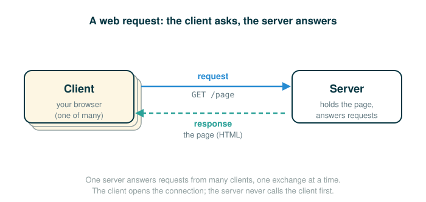

4.6.2 Client/Server Architecture and Web Requests
The previous lesson showed how two computers exchange raw bytes reliably. This lesson is about how to organize that exchange into a service that one computer offers and many others use. By the end you will be able to do five things: describe the client/server architecture and the roles inside it, walk through what actually happens when a browser requests a web page, read the byte string that a web server sends back, read an HTTP request and response well enough to know whether it succeeded, and explain why a single central server is both convenient and risky.
The most important habit here is the one from distributed systems generally: stop treating "load a web page" as one magical action, and start seeing it as a precise sequence of separate requests and responses between programs that each play a fixed role.
A Real-World Analogy: The Reference Desk
Picture the reference desk at a large library. You walk up and ask, "Where can I find the day's newspaper?" The librarian has access to records and shelves you do not, looks something up, and hands you what you asked for. You did not need to know how the catalog works or where the storeroom is. You only needed to know how to ask a question the librarian understands, and how to read the answer.
That is the whole shape of the client/server architecture. You are the client: you issue a request and make use of the response. The librarian is the server: it provides a service by responding to requests. The split is about role, not size. A small phone can be a server if it is answering requests, and a powerful machine can be a client if it is the one doing the asking.
One more feature of the desk matters later. There is one desk, and everyone in the library lines up at it. That is convenient, because there is a single place to go. It is also fragile: if the librarian steps away, the whole line is stuck.
The Client/Server Architecture
The client/server architecture is a way to dispense a service from a central source. A server provides a service, and multiple clients communicate with the server to consume that service. In this architecture, clients and servers have different roles. The server's role is to respond to service requests from clients. A client's role is to issue requests and make use of the server's response in order to perform some task.

Each solid arrow is a request traveling from a client to the server. Each dashed arrow is a response traveling from the server back to the client.
The most influential use of this model is the modern World Wide Web. When a web browser displays the contents of a web page, several programs running on independent computers interact using the client/server architecture. The rest of this lesson follows the process of requesting a web page, because that one process illustrates every central idea in client/server distributed systems.
Roles: Requesting a Web Page
The web browser on a user's computer plays the role of the client when it requests a web page. To get the content for a domain name on the Internet, such as www.nytimes.com, the browser must communicate with at least two different servers.
The browser first needs to turn the human-friendly name into a numerical address. Then it needs to ask the machine at that address for the page. Those are two separate requests to two separate servers, and the next two sections walk through each one.
Step One: DNS Lookup
Humans prefer names such as www.nytimes.com. The network routes data using IP addresses, which are numerical identifiers of machines on the Internet. So the client first requests the Internet Protocol (IP) address of the computer located at that name from a Domain Name Server (DNS). A DNS provides the service of mapping domain names to IP addresses.
Notice that the DNS is itself a server, offering one specific service. Python can make this request directly using the socket module:
>>> from socket import gethostbyname
>>> gethostbyname('www.nytimes.com')
'170.149.172.130'This block is fenced as plain text, not as a runnable Python example, because a live DNS lookup depends on the network and the result can change over time. The teaching point is stable even when the exact address is not: the name is translated into an address so that later requests can be routed to the right machine.
Follow the Line: The DNS Lookup Call
The middle line of that session is an ordinary call expression (a function call). Read it one token at a time.
gethostbyname('www.nytimes.com')
├─ gethostbyname ...... the function imported from socket: maps a name to an IP address
├─ ( .................. begins the input
├─ 'www.nytimes.com' .. the domain name to look up, as a string
├─ ) .................. ends the input
└─ returns the IP address string for that name, here '170.149.172.130'The call hands the server one piece of data, a name, and gets back one piece of data, an address. That address is what the network actually needs in order to deliver the next request.
Step Two: Requesting the Page Contents
Now that the client has an IP address, it requests the contents of the web page from the web server located at that address. In this case the response is an HTML document. That document contains the headlines and article excerpts of the day's news, as well as expressions that tell the browser how to lay that content out on the screen.
Python can make the two requests required to retrieve this content using the urllib.request module:
>>> from urllib.request import urlopen
>>> response = urlopen('http://www.nytimes.com').read()
>>> response[:15]
b'<!DOCTYPE html>'This is fenced as text, again because it depends on a live network response that can change. Read it carefully, because a single line does a lot of work, and it is easy to misread what response actually holds.
Follow the Line: Retrieving the Page
The second line is where the request happens. Walk through its tokens.
response = urlopen('http://www.nytimes.com').read()
├─ urlopen ............................ the function: opens a connection to a web address
├─ ('http://www.nytimes.com') ......... the address to request, as a string
├─ .read() ............................ reads the whole response body back as bytes
└─ response = ......................... binds the name response to those bytesThe call urlopen('http://www.nytimes.com') opens a connection to the web server and asks for the page at that address. Calling .read() on the result pulls back the entire response body as a bytes object and response = stores it.
The next line then inspects only the beginning of that data.
response[:15]
├─ response ... the bytes object holding the page's response body
├─ [:15] ...... a slice taking the first 15 elements
└─ evaluates to the first 15 bytes, shown as b'<!DOCTYPE html>'The leading b in b'<!DOCTYPE html>' means this is a bytes object, not an ordinary string. The web response arrives as raw bytes, and software must decode those bytes before treating them as text. This is the crucial correction to a common expectation: urlopen does not "open the website" in any visual sense. It asks the server for bytes. A browser is the thing that later interprets a flood of such bytes as HTML, images, fonts, and scripts and paints them on a screen.
A Browser Makes Many Requests
Getting the first HTML document is only the start. Upon receiving that response, the browser issues additional requests for images, videos, and other auxiliary components of the page. These extra requests happen because the original HTML document contains the addresses of additional content along with a description of how that content embeds into the page.
So a single page load is not one client/server exchange. It is the first request for the HTML, followed by a burst of follow-up requests, each one its own small client/server conversation. This is exactly why "open a web page" should be understood as a coordinated sequence rather than a single magical action.
An HTTP Request
So far we have talked about requests in the abstract. The actual format of those messages is fixed by a protocol. The Hypertext Transfer Protocol (HTTP) is a protocol, implemented using TCP, that governs communication for the World Wide Web. It assumes a client/server architecture between a web browser and a web server, and it specifies the format of the messages exchanged between them. All web browsers use the HTTP format to request pages from a web server, and all web servers use the HTTP format to send back their responses.
HTTP requests come in several types. The most common is a GET request, which asks for a specific web page. A GET request specifies a location. For instance, typing the address http://en.wikipedia.org/wiki/UC_Berkeley into a web browser issues an HTTP GET request to port 80 of the web server (a port is just the numbered channel on a machine that a given service listens on; HTTP uses 80 by default) at en.wikipedia.org for the contents at location /wiki/UC_Berkeley.
Follow the Line: What a GET Address Specifies
The protocol pulls apart the address you typed into the pieces the request needs. Read that one address as its parts.
http://en.wikipedia.org/wiki/UC_Berkeley
├─ http:// ............ the protocol: speak HTTP, which by default uses port 80
├─ en.wikipedia.org ... the web server to send the GET request to
├─ /wiki/UC_Berkeley .. the location (path) being requested on that server
└─ result an HTTP GET request to port 80 of en.wikipedia.org for /wiki/UC_BerkeleyThe key idea is that the human-typed address carries everything the request needs: which server to contact, and which resource on that server to ask for.
The HTTP Response
The server sends back an HTTP response. Here is the example from the source:
HTTP/1.1 200 OK
Date: Mon, 23 May 2011 22:38:34 GMT
Server: Apache/1.3.3.7 (Unix) (Red-Hat/Linux)
Last-Modified: Wed, 08 Jan 2011 23:11:55 GMT
Content-Type: text/html; charset=UTF-8
... web page content ...On the first line, the text 200 OK indicates that there were no errors in responding to the request. The lines after it form the header and give information about the server, the date, and the type of content being sent back. Below the blank line comes the actual web page content.
Follow the Line: The Status Line
The first line of the response is the part a program reads first to learn whether the request worked. Read its tokens.
HTTP/1.1 200 OK
├─ HTTP/1.1 ... the protocol version the server is speaking
├─ 200 ........ the numeric response code: here, success
├─ OK ......... a short human-readable description of that code
└─ meaning the request succeeded, and a valid response body follows the headerWhen a Request Fails
If you have typed a wrong web address, or clicked a broken link, you may have seen a page-level error message such as this:
404 Error File Not FoundThat message is shown because the server sent back an HTTP header that started with this status line:
HTTP/1.1 404 Not FoundFollow the Line: A Failure Status Line
The shape of the failure line is identical to the success line; only the code and description differ.
HTTP/1.1 404 Not Found
├─ HTTP/1.1 ..... the protocol version the server is speaking
├─ 404 .......... the numeric response code: the resource was not found
├─ Not Found .... a short human-readable description of that code
└─ meaning the requested resource does not exist at that locationResponse Codes Are Part of the Protocol
The numbers 200 and 404 are HTTP response codes. A fixed set of response codes is a common feature of a message protocol. Designers of protocols try to anticipate the common messages that will be sent and assign each one a fixed code. Doing so reduces transmission size and establishes a common meaning that both sides agree on. In the HTTP protocol, the 200 response code indicates success, while 404 indicates an error that a resource was not found. A variety of other response codes exist in the HTTP 1.1 standard as well.
This is why programs care about the number more than the words. A program can branch cleanly on 200 versus 404, because the codes are fixed and shared. The phrases like OK and Not Found are there to help humans read the message.
Modularity
The concepts of client and server are powerful abstractions. A server provides a service, possibly to many clients at once, and a client consumes that service. The clients do not need to know the details of how the service is provided, or how the data they receive is stored or calculated. The server does not need to know how its responses are going to be used. The protocol forms a boundary between the two, and each side only has to honor that boundary.
This is what makes the design modular. Because the boundary is the message format and not the implementation, a client that speaks HTTP does not need to know whether the server was written in one language or another. It only ever sees the messages.
On the web, we usually think of clients and servers as living on different machines. But even systems on a single machine can have client/server architectures. For example, signals from input devices on a computer need to be generally available to the programs running on that computer. The programs are the clients, consuming mouse and keyboard input data. The operating system's device drivers are the servers, taking in physical signals and serving them up as usable input. In addition, the central processing unit (CPU) and the specialized graphical processing unit (GPU) often participate in a client/server architecture, with the CPU as the client and the GPU as a server of images.
In each of these cases, one part of the system promises an interface so that another part can use it without knowing every implementation detail.
Drawbacks of a Central Server
The reference desk was convenient and fragile for the same reason: there was only one of it. Client/server systems share that tension.
One drawback is that the server is a single point of failure. It is the only component with the ability to dispense the service. There can be any number of clients, and clients are interchangeable: they can come and go as necessary. But if the one server stops working, every client loses access to the service.
Another drawback is that computing resources become scarce if there are too many clients. Clients increase the demand on the system without contributing any computing resources of their own. The server's resources are finite, and enough clients can overwhelm it.
These two pressures are exactly what motivate the alternatives covered in the next lesson, where peers contribute resources instead of only consuming them.
⚠Common Beginner Traps
- Thinking a domain name is already an address. A name such as
www.nytimes.comusually needs a DNS lookup to become an IP address before any page request can be routed. - Thinking
urlopenopens a visual browser. It opens a connection and, with.read(), hands back raw bytes. Nothing is displayed; a browser is what later renders bytes. - Reading
b'<!DOCTYPE html>'as a normal string. The leadingbmarks a bytes object. Web responses arrive as bytes and must be decoded before being treated as text. - Treating the status words as the protocol. Programs branch on the numeric code, such as
200or404. The wordsOKandNot Foundare for humans. - Believing one page is one request. The first HTML response names more resources, so the browser sends many follow-up requests to load a single page.
- Assuming a central server is always safe. A single server is a single point of failure, and its computing resources can become scarce when too many clients depend on it without contributing resources of their own.
✓Check Your Understanding
- A server holds
server_data = {"/": "<html>Home</html>", "/about": "<html>About</html>"}and answers a request by returning{"status": 200, "body": server_data[path]}whenpathis a key and{"status": 404, "body": "Not Found"}otherwise. What record does it return forpath = "/", and what record forpath = "/contact"? - When a browser requests a page at
www.nytimes.com, why must it contact at least two different servers? - In
response = urlopen('http://www.nytimes.com').read(), what kind of object does.read()produce, and how can you tell fromresponse[:15]? - Typing
http://en.wikipedia.org/wiki/UC_Berkeleyissues a GET request. Which server does it contact, and what location does it ask for? - Why do protocols like HTTP assign fixed numeric response codes such as
200and404? - Give one drawback of relying on a single central server.
Show the answers
- For
path = "/", the path is a key, so it returns{"status": 200, "body": "<html>Home</html>"}. Forpath = "/contact", the path is not a key, so it returns{"status": 404, "body": "Not Found"}. - It contacts a DNS server to map the domain name to an IP address, and then contacts the web server at that address to request the page contents. Those are two separate services.
.read()produces a bytes object holding the response body. You can tell becauseresponse[:15]displays asb'<!DOCTYPE html>', and the leadingbmarks a bytes object rather than an ordinary string.- It contacts the web server at
en.wikipedia.org(on port 80) and asks for the contents at location/wiki/UC_Berkeley. - Fixed codes reduce transmission size and establish a common meaning that both client and server agree on, so a program can branch reliably on the code. In HTTP,
200means success and404means a resource was not found. - The server is a single point of failure: if it stops working, all clients lose the service. (Alternatively: computing resources become scarce when too many clients add demand without contributing any computing resources.)
§Summary
The client/server architecture dispenses a service from a central source: a server responds to requests, and one or more clients issue requests and use the responses. Loading a web page is the headline example. The browser, acting as a client, first asks a DNS server to turn a domain name into an IP address, then asks the web server at that address for the page. A call like urlopen('http://www.nytimes.com').read() requests the page and returns raw bytes, whose first 15 are b'<!DOCTYPE html>' — bytes, not a finished page. The browser then issues many more requests for images, videos, and other components named inside the HTML. All of these messages follow HTTP, which fixes the format of GET requests and of responses whose status lines carry numeric codes such as 200 OK and 404 Not Found. The model is modular because the protocol, not the implementation, is the boundary, which is the same idea behind device drivers and CPU/GPU cooperation on a single machine. Its main weakness is centralization: one server is a single point of failure and a scarce resource as clients multiply.
▶Step-Through Checkpoint
This block makes no network request. It is a Python model of the request/response shape: a server function looks a path up in the data it holds and returns a record that separates a status code from a body, just as a real protocol does. Stepping through it draws the environment diagram of that exchange: the server_data dict sits on the heap as the server's contents, each handle_request call opens a frame holding the path the client sent, and the {"status", "body"} dict it returns becomes the response object that response and missing then point at. Before you step through the block below, write down three predictions: which return line runs for each call, the four lines the program prints, in order, and whether the two handle_request frames are ever open at the same time.
# (1)
def handle_request(server_data, path):
if path in server_data:
return {"status": 200, "body": server_data[path]}
return {"status": 404, "body": "Not Found"}
server_data = {
"/": "<html>Home</html>",
"/about": "<html>About</html>",
}
response = handle_request(server_data, "/about")
print(response["status"])
print(response["body"])
missing = handle_request(server_data, "/missing")
print(missing["status"])
print(missing["body"])
Step through it and check each prediction. The first call finds "/about" in server_data, so the first return line runs and the prints show 200, then the stored body. The second call asks for "/missing", which is not a key, so the second return line builds the 404 record — its body "Not Found" comes from the return line, not from the server's data. Each frame closes before the next opens; the string "/about" is just data the client sends, and the success-versus-not-found split is exactly what real HTTP encodes in its response codes.